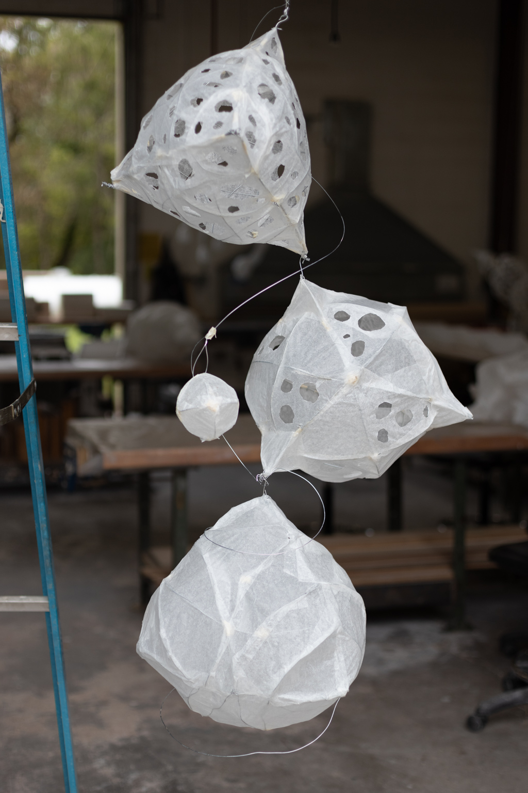

Aesthetics
Exploration
A bit more artsy.
At a young age, I found out that I could draw things in perspective.
Drawing cars I saw every day on the streets was one of my favorite pastimes.
Long story short, I finally minored in Studio Art in college!
Photography work
I shoot with Fujifilm cameras.


Independent Study Drawings
2020
This is a gallery of my independent study project. A hybrid of eastern mindset and western lifestyle.


Graphic Design - Daft Gods
2019
Graphic design for ARST 243 Graphic Design class at Bucknell. In retrospect, this set the scene for my independent study project.

Graphic Design - Algorithm
2019
"Advocacy" poster design for ARST 243 Graphic Design class at Bucknell.

Sculptures
2019
This is a gallery of my sculpture work.
